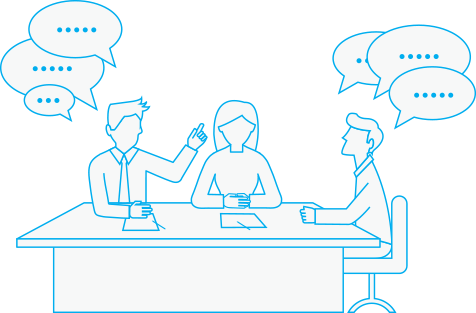

The Elephant Down Under
The inspiration for this survey came from Elephant in The Valley, a survey that was conducted in Silicon Valley in 2015. It focused on five main areas including: Feedback & Promotion, Inclusion, Unconscious biases, Motherhood, and Harassment & Safety. The Elephant Down Under asks the same questions as the original survey but instead focuses on women in technology in Australia.
I encourage you to read, discuss and share using the hashtag #elephantdownunder.
Best,
Cath Jones
Too hard or too soft
have been told they were too aggressive (with a third hearing that on multiple occasions)
It is difficult for women in tech to strike the right balance without being seen as too meek or too harsh:
- 57% of women have been told that they are too emotional
- 49% of women have been told that they are too bossy
No Seat at the Table
felt excluded from key social/networking opportunities because of gender
- 52% have felt they have not had the same opportunities as their male counterparts
- 75% witnessed sexist behavior at company offsites and/or industry conferences
Unconscious Biases
have experienced clients/colleagues address questions to male peers that should be addressed to them
- Eye contact with male colleagues and not me: 70%
- Demeaning comments from male colleagues: 78%
- 44% asked to do lower-level tasks that male colleagues not asked to do
Impact of Family
were asked about family life, marital status and children in interviews
- 49% feel the need to speak less about their family to be taken more seriously
- Of those who took maternity leave, 27% shortened their leave because they thought it would negatively impact their career
Sexual Harassment
of women in Tech
reported unwanted sexual advances
- 90% of women who report unwanted sexual advances had received advances from a colleague, with over half receiving advances more than once
- 41% have felt afraid of their personal safety because of work related circumstances
Resolution?
who reported sexual harassment were dissatisfied with the course of action
- 32% of those harassed did nothing because they thought it would negatively impact their career
- 39% did not report, because they wanted to forget
- 27% did not report because they didn't think reporting would make a difference
Methodology
This survey was promoted at Ruby Conf Australia 2016 and via social media. I had 150 women complete an online survey between February and May 2016. A more detailed comparison between Elephant in the Valley and Elephant Down Under will be available soon.
Profile of the respondents:
- 100% female
- 82% living in NSW or Victoria
- 2% CXOs (CEO, CMO, CTO, etc.), 38% engineers, 3% founder/entrepreneur, 16% consultants
- 74% under 40, 23% 40-49 and 5% 50+